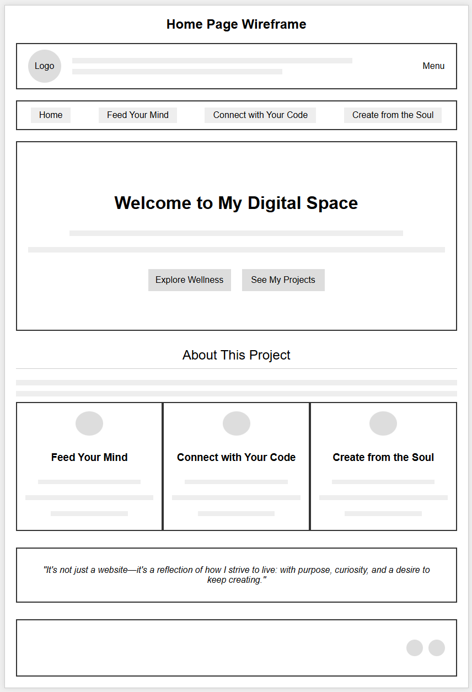
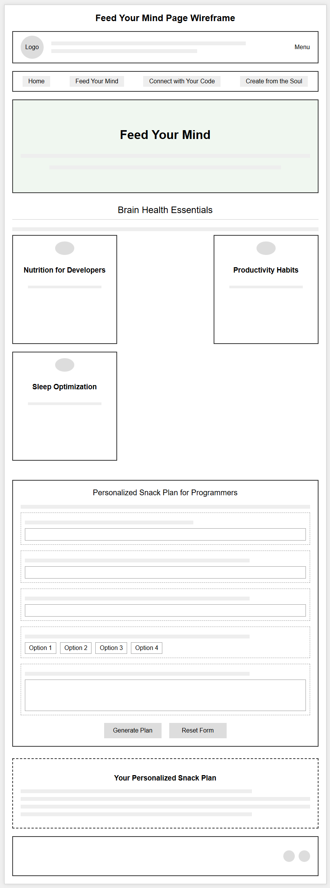
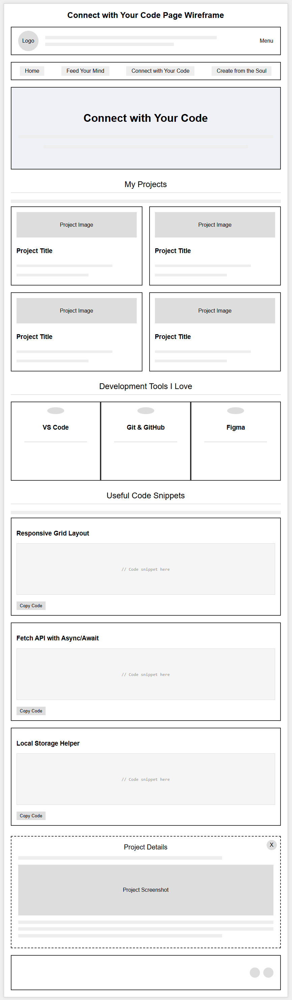
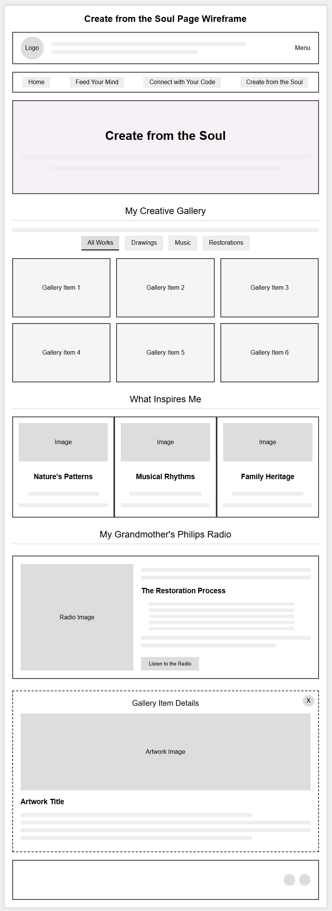

1. Site Name
The site name is Brain, Body, and Code, which reflects the three main areas of focus: mental wellness, physical health, and programming skills. This name was chosen because it effectively communicates the holistic approach to development that I want to share with visitors.
2. Site Purpose
The purpose of this website is to create a personal space that brings together three key areas of my life:
- Physical and mental well-being - Sharing nutrition tips, productivity habits, and wellness practices that support a healthy developer lifestyle.
- Professional development in software - Showcasing my projects, resources, and code snippets that might be helpful to others on their coding journey.
- Creative expression - Displaying my artistic endeavors including drawings, music experiments, and restored family artifacts that inspire my work.
This site will serve as both a portfolio of my work and a resource for others interested in maintaining balance between technical skills, physical health, and creative pursuits.
3. Scenarios
The following scenarios represent questions that might be asked by visitors to the site:
Scenario 1: Developer Looking for Wellness Tips
"I spend long hours coding and often feel mentally drained. What foods or habits could help me maintain focus and energy throughout the day?"
This visitor would find value in the "Feed Your Mind" section, which offers nutrition recommendations specifically for developers, productivity techniques like the Pomodoro method, and a form to create a personalized healthy snack plan based on their specific needs and preferences.
Scenario 2: Student Looking for Code Examples
"Where can I find practical code snippets for common web development tasks that I can adapt for my own projects?"
This visitor would benefit from the "Connect with Your Code" section, which includes reusable code snippets for responsive layouts, API fetching with async/await, and local storage implementation, along with explanations of how and when to use them.
Scenario 3: Person Interested in Creative Restoration
"How did you restore that vintage Philips radio, and what inspired you to take on that project?"
This visitor would find their answer in the "Create from the Soul" section, which details the restoration process of my grandmother's radio, including the techniques used, challenges faced, and how this project connects to my approach to software development.
4. Color Scheme
The color scheme for this website is designed to create a calm, professional atmosphere while also incorporating colors that represent each of the three main sections:
#2c6e9b
#4a8f6c
#6b4a8f
#333333
#f5f5f5
Color Usage
- Primary Blue (#2c6e9b) - Used for the header, footer, and primary buttons. Represents the "Code" aspect of the site.
- Primary Green (#4a8f6c) - Used for accents on the "Feed Your Mind" page and secondary interactive elements. Represents the "Body" aspect.
- Primary Purple (#6b4a8f) - Used for accents on the "Create from the Soul" page and tertiary interactive elements. Represents the "Brain" aspect.
- Dark Gray (#333333) - Used for main text content and footer background.
- Light Gray (#f5f5f5) - Used for section backgrounds and card backgrounds.
5. Typography
The typography for this website uses a combination of two Google Fonts that complement each other while maintaining readability and professionalism:
Heading Font: Montserrat
Montserrat Bold (700)
Montserrat Regular (400)
Montserrat will be used for all headings (h1-h6), navigation items, and buttons. Its clean, modern appearance provides good contrast with the body text and works well for section titles and interactive elements.
Body Font: Open Sans
Open Sans Regular (400) - Main body text
Open Sans Semi-Bold (600) - Emphasis and important points
Open Sans will be used for all body text, paragraphs, and smaller UI elements. Its excellent readability across screen sizes and devices makes it ideal for longer content sections.
6. Wireframe
Below are wireframes for the main pages of the Brain, Body, and Code website. These wireframes show the layout for desktop view. The mobile view will stack all elements vertically.
Home Page Wireframe
Feed Your Mind Page Wireframe
Connect with Your Code Page Wireframe
Create from the Soul Page Wireframe
The wireframes illustrate:
- Consistent header with logo, site name, and navigation across all pages
- Hero section on each page with relevant heading and description
- Specialized content sections for each area of focus
- Interactive elements like forms, galleries, and code snippets
- Modal windows for detailed content viewing
- Consistent footer with copyright information and social links